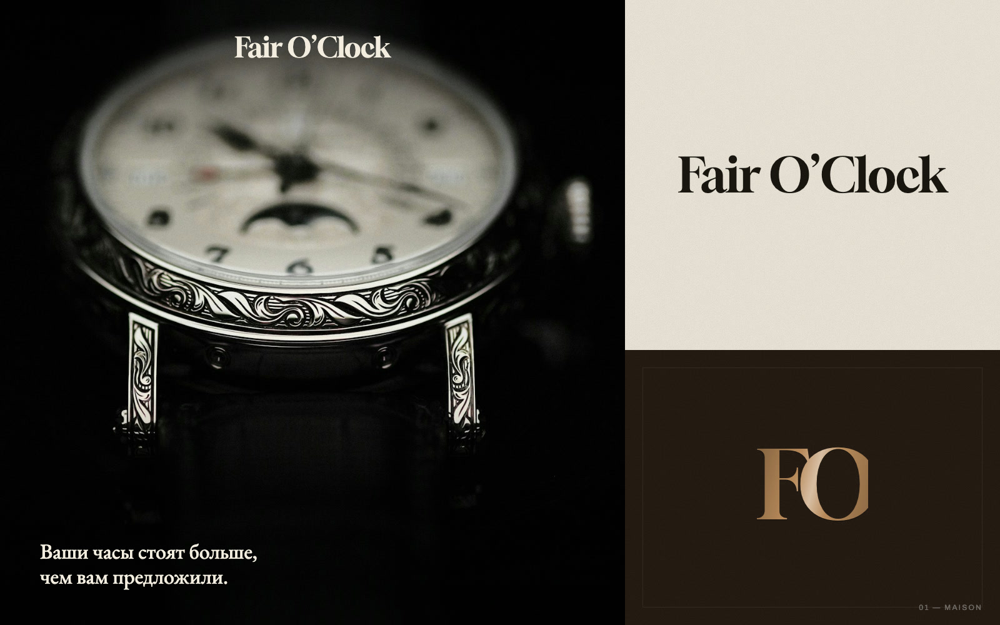
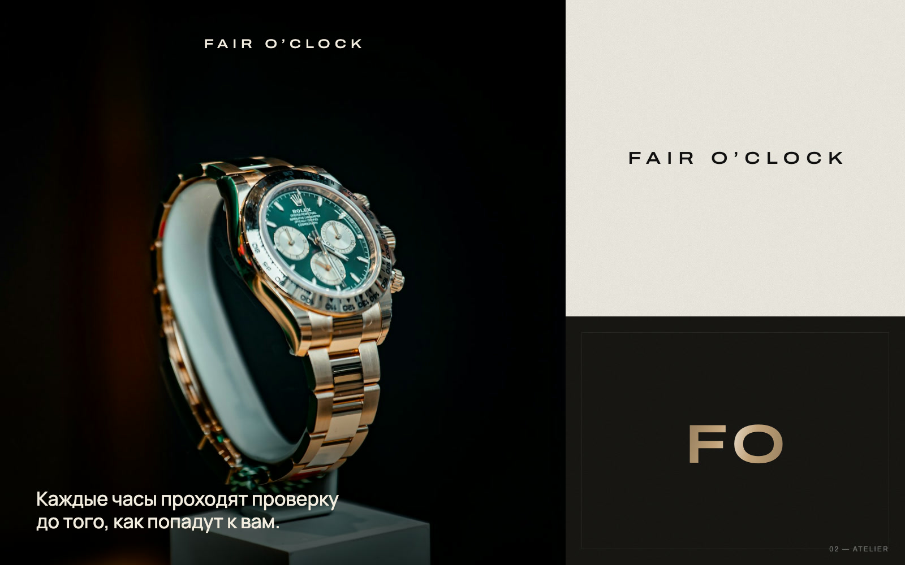
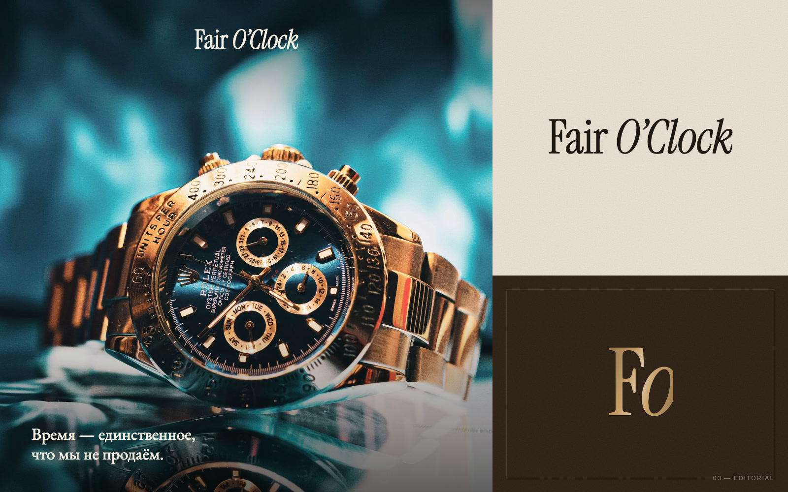
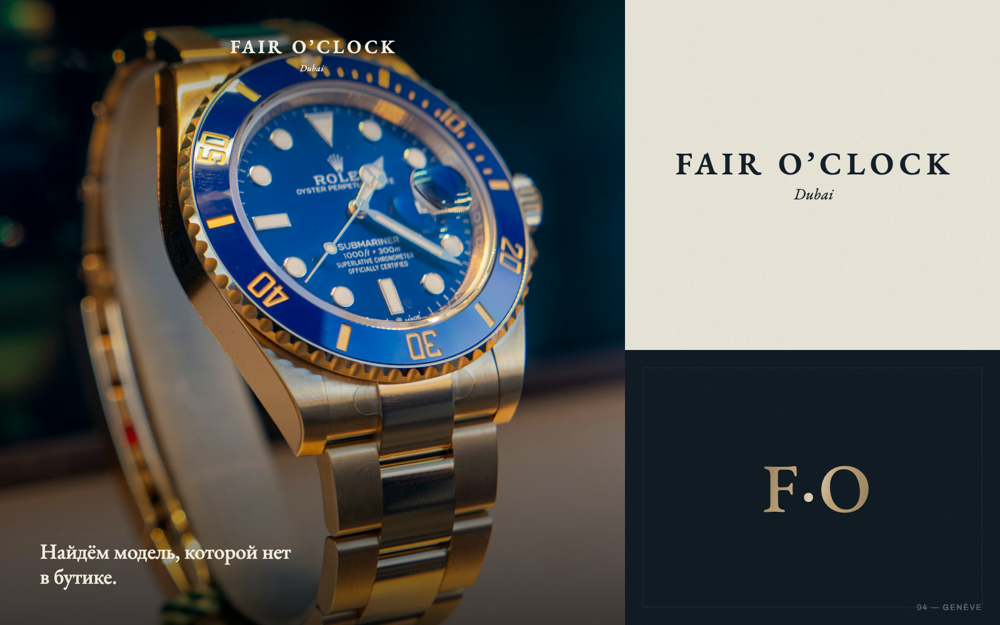
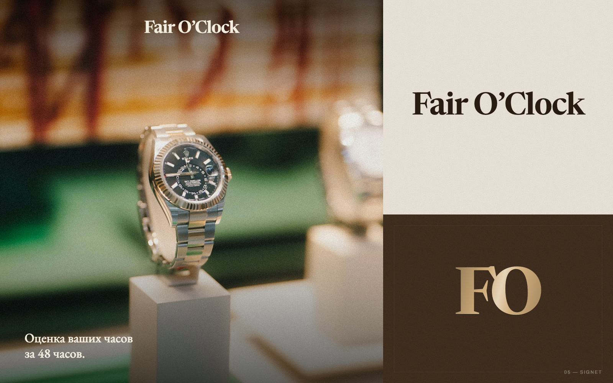

ДомMaison

Gloock — тяжёлая контрастная антиква с характером, без «волосяных» линий. Только надпись, как у старых часовых домов: никаких значков-кружков. Сокращённая подпись — сцепка FO.
АтельеAtelier

Широкий гротеск в капсе с большим межбуквенным расстоянием — язык современных модных домов. Ничего лишнего, но буквы плотные и устойчивые. Выглядит дорого за счёт пустоты вокруг, а не декора.
ЖурналEditorial

Журнальная подача: прямое «Fair» и курсивное «O’Clock» в одну строку, как заголовок на обложке. Instrument Serif — узкая, плотная, без вычурности. Сразу ощущение глянца, а не шаблона.
ЖеневаGenève

Классическая часовая школа: EB Garamond в капсе средней жирности, ровные пропорции, «Dubai» курсивом. Так подписаны циферблаты и сертификаты швейцарских мануфактур. Спокойная уверенность без попытки удивить.
ПерстеньSignet

Надпись с собственным знаком без кружков: буквы F и O сцеплены как гравировка на печатке. Шрифт Newsreader Display — плотная современная антиква. Сцепка работает и как аватар, и как тиснение на коробке.